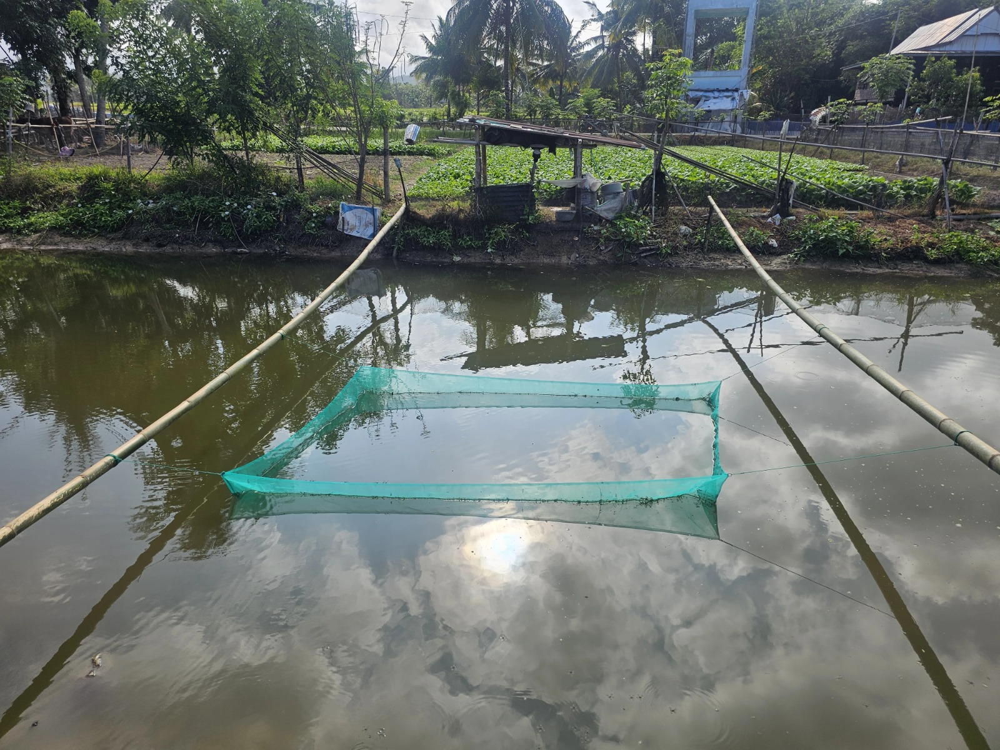
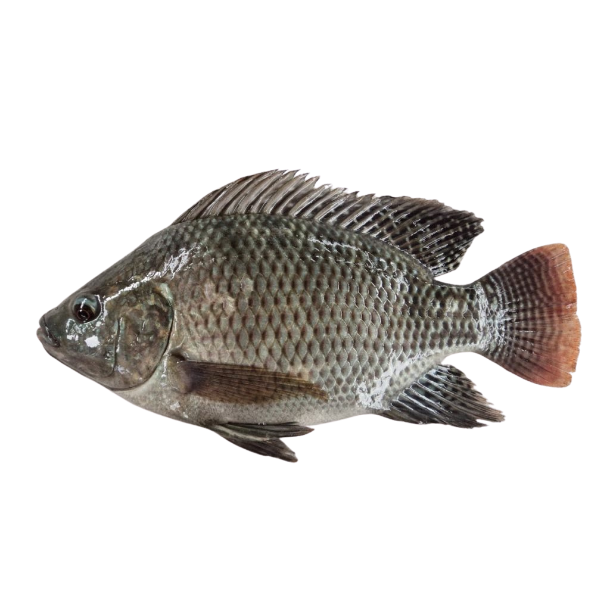
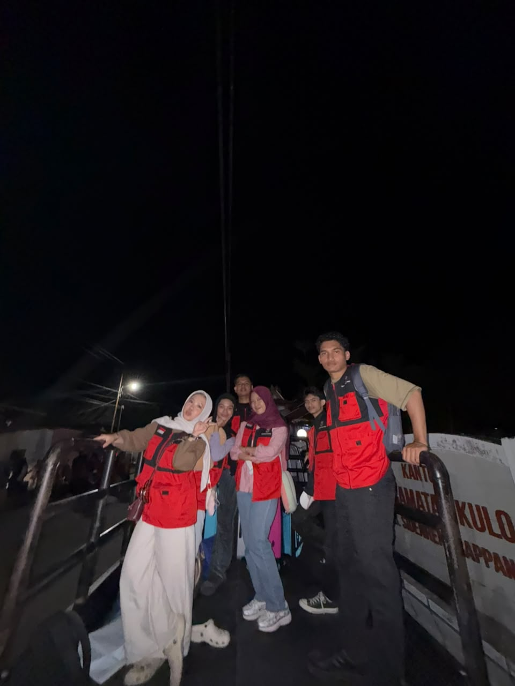

SMARTFISH
Selamat datang di rumah bagi bibit perenang tangguh. Keramba jaring berukuran 2x3 meter ini menggunakan sistem sirkulasi air alami yang memastikan ikan nila (Tilapia) bebas stres dan tetap sehat. Dilengkapi dengan asupan pelet berprotein tinggi dan daya tahan imun super kuat, bibit-bibit ini siap tumbuh maksimal.
Mulai masuk pada Agustus 2026, kami menargetkan panen melimpah pada bulan November hingga Desember 2026. Mohon doanya, dan ingat: boleh difoto, tapi jangan diberi makan sembarangan!


NILA
Selamat datang di rumah bagi bibit perenang tangguh. Keramba jaring berukuran 2x3 meter ini menggunakan sistem sirkulasi air alami yang memastikan ikan nila (Tilapia) bebas stres dan tetap sehat. Dilengkapi dengan asupan pelet berprotein tinggi dan daya tahan imun super kuat, bibit-bibit ini siap tumbuh maksimal.
Mulai masuk pada Agustus 2026, kami menargetkan panen melimpah pada bulan November hingga Desember 2026. Mohon doanya, dan ingat: boleh difoto, tapi jangan diberi makan sembarangan!
DOKUMENTASI


